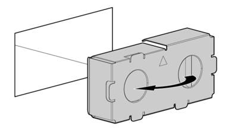

This section provides a
descriptive overview of the Core Site Maintenance Procedures, including Preventive
and Corrective interventions and recommended actions for each case. Additionally,
this section includes implementation guidelines that NaaS Operators may
consider elaborating their maintenance manuals to standardize their maintenance
interventions.
In order to guarantee a successful maintenance operation,
Technicians must perform a set of tasks before, during and after each
maintenance intervention. This section describes the required tasks to be
performed during the Preventive and Corrective Interventions.
3.1.1
Preventive Maintenance.
The Preventive Maintenance (PM) implies the condition
assessment of certain items, considering a reference standard to diminish the
probability of potential failures. The Preventive Maintenance Schedule is
planned following different strategies, as is detailed in the module Field Work Management.
At
the basic level, PM can be deployed as a strategy to improve the availability
performance of a particular data center component. At a more advanced level, PM
can be leveraged as the primary approach to ensuring the availability of the
entire data center power system (generators, transfer switches, transformers,
breakers and switches, PDUs, UPSs), cooling system (CRACs, CRAHs, humidifiers,
condensers, chillers) and Core equipment (Servers, Storage, Switches and
Routers).
One
of three results can be expected during a PM
visit:
- A potential issue is identified, and immediate actions are
taken to prevent a future failure. This is the most prevalent outcome of a PM
visit and is called a Service. Please note
that the Service is only executed if the item does not comply with the
reference standard.
- A new, active issue is identified, and the appropriate
Corrective Maintenance is scheduled.
- No issue is identified during the visit and no downtime
occurs through to the next PM visit. The equipment is manufacturer-approved and certified to function within operating guidelines.
The following subsections contain a General Description of
the Preventive Maintenance tasks for each element on a Core Site, categorized
in Power System, Air Conditioner System & Shelter Environment and Core
Equipment.
3.1.1.1
Core Equipment Preventive Maintenance.
The Core Equipment include Servers, Networking equipment,
Storage, and data cabling. Table 1 provides the maintenance items, condition
assessment, reference standard, and service required of a Core Equipment for a
Core Site. Please note that in most cases, the SW Maintenance is performed by
NOC.
|
Recommended
Schedule
|
Condition
Assessment
|
Reference
Standard
|
Service
Required
|
|
Daily
|
●
Check
for visual alarms with the LED indicators
|
●
There
are no alarm indicators
|
Contact NOC/Field Work
Management
|
|
Monthly
|
●
Verify
the backups are working.
●
Check
disk usage.
●
Update
Control Panel firmware.
●
Check
application updates.
●
Check
remote management tools.
●
Check
server utilization.
●
Review
user accounts.
●
Check
system security.
|
●
Create
Backups Daily
●
Delete
logs and s/w versions that are not in use
●
Change
passwords
●
Update
the OS as is required.
●
Update
Management Tools
|
Contact HW and SW provider
in case of high server utilization or SW Malfunction.
|
|
Monthly
|
Visual Inspection
|
Fans and air outlets are
clean
|
Clean dust using an air
blower, ensuring enough space to not damage circuits.
|
|
Quarterly
|
Check that unused Ports
and fibers have protective caps
|
All Unused Ports and
fibers are properly protected
|
Install caps in unused
ports and fibers
|
Table 1 Core Equipment Preventive
Maintenance
3.1.1.2
Power System Preventive Maintenance
The Power System consists of Uninterruptible Power Systems (UPS),
Power Distribution Units (PDUs), Power Supply Units (PSUs), Grounding, and a
Power Generator. In case NaaS Operators own one, it will also include the
Automatic Transfer Switch. While some basic maintenance tasks such as visual
inspections can be performed by NaaS Operators staff, the majority of
services require a trained technician from the power system vendor
organization, both for the expertise required and also to ensure personnel safety.
Table 2 shows a recommended UPS/PDU maintenance schedule.
Please note that the Service is only executed if the item does not comply with
the reference standard.
|
Recommended
Schedule
|
Condition
Assessment
|
Reference
Standard
|
Service
Required
|
|
Monthly
|
●
Visual
Inspection
●
If
a battery monitoring system is in place, review the results
●
Measure
the battery float charging current
|
●
All
system components are clean
●
Input,
Output and bypass voltage and current values are within designed
specifications.
|
●
Clean
boards using an air blower, ensuring enough space to not damage circuits.
●
Contact
UPS Provider if Voltage is not within designated specifications.
|
|
Quarterly
|
●
Visually
inspect equipment for loose connections, burned insulation or any other signs
of wear.
●
Measure
the voltage of each cell or battery block.
●
Visually
check for liquid contamination from batteries and capacitors.
|
●
Power
Ports are correctly connected and insulated
●
Input,
Output, and bypass voltage are within designed specifications.
●
Batteries
do not produce excessive heat
|
●
Tight
loose connections following vendor procedure
●
Clean
Battery connections following vendor Specifications
●
Contact
UPS Provider Capacitors shows any leak.
|
|
Twice a year
|
●
Check
UPS Firmware
|
●
The
Firmware is updated
|
●
Update
Firmware as required.
|
|
Yearly
|
●
Inspect
UPS/ PDU components
●
Conduct
thermal scans on electrical connections using a diagnostic tool
●
Measure
and check the torque of all connections.
●
Load-test
the battery bank disconnecting the UPS from its power source.
For flooded-cell
batteries, the technician should:
●
Inspect
terminals for signs of corrosion and accumulation of dirt
●
Measure
and record the voltage and current of the entire bank
●
Measure
and record the voltage for each individual cell and test their electrolytes
●
Record
and log measurements to track battery performance
|
●
There
are no signs of corrosion and heat damage
●
There
are no hot spots in the UPS System
●
All
Power connection are tight with the right torque
●
Batteries
Float current are within designed specifications. There are no signs of
corrosion and heat damage
|
●
Re-torquing any power connections as needed
●
Clean
signs of corrosions
●
Replace
batteries if it is required
|
Table 2 UPS/PDU Preventive Maintenance
Table 3 shows a recommended maintenance schedule for
grounding and electrical distribution service- Please note that the Service is
only executed if the item does not comply with the reference standard.
|
Recommended
Schedule
|
Item
|
Condition
Assessment
|
Reference
Standard
|
Service
Required
|
|
Monthly
|
Fuses, Breakers, Barriers
and Shutters.
|
Visual inspection
|
●
There
are no signs of burn-in Fuse and breaker.
●
Proper
clearances are maintained.
●
There
are no signs of excessive deterioration or overheating.
|
●
Install
/ Replace Fuses, Breakers
●
Rearrange cabling
clearances where it applies.
|
|
Yearly
|
Grounding
|
●
Visually
verify that a proper grounding wire is present and connected to the
installation site grounding bar and the device.
●
Perform
a connectivity test between the device and the installation site grounding
bar using a multimeter.
|
●
Grounding
wire dont show signs of corrosion
●
Grounding
bars are not burned
●
Resistance
is between 1 and 5 Ohm.
|
●
If
the grounding wire is not present, put it in place.
● Replace Grounding wires
if its required
|
|
Yearly
|
Yearly
(Automatic Transfer
Switch)
|
Verify tightness of
accessible bolted electrical connections; inspect all mechanical indicating
devices for proper operation
|
Perform all mechanical
operational tests on both the circuit breaker and its operating mechanism;
confirm the proper operation of interlocks and mechanisms.
|
Contact
Vendor Provider if there is sign of malfunction in the ATS
|
Table 3
Grounding & Electrical Distribution Preventive Maintenance
3.1.1.3
Air Conditioner & Facilities Preventive Maintenance
Air conditioners and their associated subsystems, such as
chillers, cooling towers, condensers, ductwork, and pump packages, are used to
maintain the temperature and humidity within the allowed range. These devices
must be periodically checked to verify that they operate efficiently and in
accordance with the requirements of the installation site. Additionally,
Illumination and protective devices must be periodically checked.
Table 4 outlines the tasks to perform the Preventive
Maintenance on the Air Conditioning and Facilities of the Core Sites.
|
Recommended
Schedule
|
Item
|
Condition
Assessment
|
Reference
Standard
|
Service
Required
|
|
Daily
|
Core Site Room
Environmental check
|
●
Measure
room temperature and humidity.
●
Check
the system for adequate cooling.
●
Check
the Capacity to support the load.
|
Temperature within 18 C to 27 C
Relative humidity less than 60%
Dew point within the range of 5.5 C to 15 C
|
-Adjust and calibrate Air conditioner and climate
controls
|
|
Monthly
|
Air Conditioner
|
.-Inspect
unit for damage, missing or broken hardware, and abnormal noises.
.-Inspect
Air Filters
.- Check
external paint integrity.
.-Inspect
for foreign debris and signs of corrosion within the unit.
.-Inspect
heat exchangers, fan blades, and coil fins.
Inspect for water leaks on the piping system.
.-Visual
inspection for refrigerant and or Chilled Water leaks. Visually inspect the Water/Glycol
condenser loop for leaks if applicable.
.-Inspect
condensate pan and verify proper condensate removal from unit.
.-Check
fan speed regulation and controls.
|
.-There are no loud sound
and broken hardware
.-Filters are clean.
.-Paint is in good
condition
.-There is no sign of
corrosion
.-Coil Fins and blades
have no damage
There are no water leaks
.-Refrigerant or water
levels are within the operative levels.
.-There is no excessive amount of water and there is
no presence of rust.
.-Fan operates normally
|
-Replace drive belts, lubricate bearings
.-Clean or replace the factory-installed air filter
and water filter media.
.-Clean or replace the humidifier cylinder. Inspect
humidifier water valves.
.-Tight electrical connections within the unit.
.-Tighten pipe clamps, piping joints, and compressor
mounting hardware within the unit.
.-Adjust
fan speed regulation and controls.
.-Repair
Leaks as provider maintenance recommendation.
.-Fill
water supply provider maintenance recommendation.
|
|
Twice a Year
|
Illumination in the Core
Site
|
Check whether the routine and emergency illumination
in the equipment room is normal.
|
The illumination works properly
|
Look if fuse or light
breakers are switched on, notify Field Management for any malfunction.
|
|
Yearly
|
Protective devices
|
Check whether anti-disaster devices, equipment
protection devices, and fire protection devices are in good condition.
|
-The foam extinguisher or
dry powder fire extinguisher is installed in the equipment room. The pressure
and validity period of the extinguisher meets the requirements
-There is no danger of damage to the equipment by
rats or insects.
|
Replace or fill the
extinguisher
|
|
Monthly
|
Core site Cleanliness.
|
Check whether cabinets, equipment housing, equipment
interior, tables, floor, doors, and windows are clean
|
All the items to be
checked are clean.
|
Clean the Core site
Interior, looking for possible leaks.
|
Table 4 Air Conditioner and Core Site
Preventive Maintenance
NaaS Operators may consider including as part of their
operations procedures a Preventive Maintenance Checklist to help Technicians to
perform Preventive Maintenance on their Core Sites. This Module provides a Preventive
Maintenance Checklist Template that NaaS
Operators may consider as a reference to elaborate their own checklists
reflecting their needs.
3.1.2
Corrective Maintenance.
Corrective Maintenance can be triggered by the preventive
inspections, which detect that corrective actions are required and will require
service interruption such as cabling replacement. However, corrective actions
are triggered as well in case of unexpected failures. In this case, the
Dispatcher/ Field Manager releases a work order that Technicians must review
and understand before departure to the site. The following subsections include
a high-level overview of the key tasks that
the field maintenance team may perform before, during and after corrective
actions.
3.1.2.1
Corrective Maintenance on Core Equipment.
When corrective actions are triggered to maintain the
Servers, Storage or Networking Equipment, it must be likely to check a Critical
Event that NOC could not solve remotely. The core site may be out of service if
there is no redundant configuration installed. Technicians must perform certain
actions before considering hardware replacement. Below are some considerations
for corrective maintenance on Baseband and Transmission Equipment.
Pre-requisites
- Core Site Staff must ensure that there is a backup
configuration file of the Core equipment. This
procedure may be performed by the NOC, storing the configuration file in the
O&M system or locally by the Core Site Staff. The best practice is to have the backup file in both locations.
- The faulty equipment model is confirmed, and the New
Equipment of the same model is ready.
Procedure
If Core Equipment
seems not to be energized:
- Check the voltage output from the UPS/PDU which should be
within the operative voltage, otherwise see Section 3.1.2.2
Corrective Maintenance on the Power System.
- If voltage output from the UPS/PDU is within the operative voltage, check the cable connection between Core equipment and PDU
and replace the cable if necessary.
- Check if the Core Equipment Power
Supply Units are working and have no damage. In case its not working, replace
the PSU following vendor documentation.
If core equipment is on, but
there is no connectivity between Core equipment and NOC:
- Check the Core equipment status from the local maintenance
port, follow vendor recommendations for troubleshooting. Check if NOC has visibility to the core equipment.
- Ensure that a Backup file is retrieved and recorded as Core Site
Staff may power-off the Core equipment and disconnect the cables from the
damaged equipment.
- If, after troubleshooting, the Core equipment remains out of service, replacement should be considered.
- Core Site Staff must replace the damaged equipment with the
new one, following the vendor documentation and
then reconnect all cables in the same way that was before the replacement. NOC
personnel must ensure the configuration is the same after the replacement.
Closing Tasks
- After the replacement, Core Site Staff must contact the NOC
to verify the Core Site status and clear remaining alarms.
In case that it is required to replace fan modules, some
vendors specify that the fans can be replaced without interrupting the service
if the baseband/transmission equipment is located in controlled environments that
do not exceed certain temperature and the replacement procedure dont exceed 20
minutes.
3.1.2.2 Corrective
Maintenance on the Power System
Any corrective action within the
power system will be required to disconnect the main power supply to protect
the technicians and the Core Site equipment. Below
are some recommendations that NaaS operators may consider including them in
their operational procedures:
Prerequisites
- The faulty Power Equipment model is confirmed, and the New Equipment of the same model is
ready.
- Core Site Staff must ensure that the
hardware version is consistent with that of the faulty Power Equipment.
- The tools and materials, such as an electrostatic discharge (ESD( wrist strap or a pair of ESD
gloves, Phillips screwdriver, ESD box or bag, and key to the cabinet door are
ready.
Procedure
If there is a complete power outage
in the Core site:
- Check if
UPS is working properly and the Core equipment is still running.
- Check if
the main input switch is turned on and have no damage. In case it is
switched off, turn on the switch, which should remain on. In the case of
automatic switch off, do not turn
it on again.
- Check the main switch
voltage or transformer voltage, notify NOC /Fieldwork
Management if voltage measurement is not within the operative range or
there is no power.
If there is no power in the
Core equipment:
- Check if
UPS is working properly and the Core equipment
is still running.
- Check
that UPS and Power Distribution Units are properly connected to the Power
System.
- Check
that UPS Output Voltage complies with the operative range of the Core
equipment.
- If UPS
is not providing the right power to the Core equipment, a UPS replacement
should be considered.
- Disconnect
the cables connected to the UPS or PDU, maintaining a connection map at
hand.
- Replace
the Damaged Equipment by the new one following vendor instructions.
- Connect all the power
cables, ensuring that the connections are the same as before the
replacement by using the connection map
Closing Tasks
- After the replacement, Core Site Staff must contact NOC to
verify the Core Site status and clear all remaining alarms.
3.1.2.3 Corrective
Maintenance on Air Conditioner
Air Conditioner Corrective Maintenance can follow the same
actions as was detailed in Section 3.1.1.3.
However, NaaS Operators may consider specialists in air conditioning
maintenance if the required repairs cannot be made by Core Site Staff. The
recommended strategy for Facilities Maintenance is to hire maintenance services
from the construction companies or Contractors. Field Management must keep track
of the companies that provide these services, oversee the process, and ensure
that the required maintenance is performed.
This section outlines the best practices to implement a
Maintenance program that will ensure the intended lifespan of the Core
equipment and standardize the procedures during the maintenance intervention in
the core site using a Maintenance Manual. Additionally, this section describes
the requirements to keep a Maintenance Record of all Maintenance Interventions.
3.2.1 Core
Site Maintenance Best Practices
The Core site must support the Core equipment with the ideal
conditions to operate optimally. Using Air Conditioning Systems and Power
Systems are used to create the right environment and provide high-quality energy
to the Core equipment.
However, installing Air Conditioner and Power Systems is not
enough to ensure the intended lifespan of the Core equipment. Maintenance
guidelines must be followed to protect the Core equipment against the elements
that cause more damage to the equipment such as Dust, Humidity and Electrical
Damage. NaaS Operators must ensure to protect their equipment following the
next Maintenance Implementation guidelines:
3.2.1.1
Measures against Dust and Particulates
The following guidelines are recommended to minimize damage
caused by dust and particulates:
- NaaS operators should consider installing an air filtration system to prevent or minimize the
presence of dust and particulates in the installation site and in the data
networking equipment. There are two main types of mechanisms as follows:
- At the site levelProper filtering of the air
intake by using air filters. For example, on the air conditioning system.
- At the card or device levelInstallation of
filters as recommended by the specific equipment installation guides.
- NaaS Operators must consider establishing a
program that includes the following actions for regular cleaning:
- Clean the spaces under the raised or access
floor periodically. Dirt, dust, and debris, which collect in and are blown
through raised-floor cavities, will eventually make their way into the air
filters. Under-floor dirt can cause unexpected electrical shorts, data
transmission problems, and even fires.
- Minimize dust dispersion during housekeeping
by placing dust bins outside the installation site to avoid further dust
displacement.
- Clean the equipment at regular intervals as
the dust can cause the equipment to retain heat and potentially cause unwanted
downtime.
- NaaS Operators should ensure that the cleaning
frequency is consistent with the rate at which contaminants are introduced. For
example, in a very dusty environment, increase the cleaning frequency to ensure
that the filters efficiently operate.
- Cartons and packaging material, such as wood pellets and fiberboard
should not be permitted in the installation site because they present a dust
hazard as they can become airborne and get
carried into the network equipment air intake vents. Dust is especially
damaging when impregnated with moisture in damp conditions.
- Perform periodic cleaning of the Air Conditioning ducts in
the Core site. Dust and particulates can clog the air intake and reduce the
operational efficiency of the Air Conditioning system as a whole.
If the measures taken to prevent the entry of dust and particulates
into the installation site are not effective, consider performing periodic
cleaning of the inner part of the data networking equipment.
To get access to the inner part of the equipment, follow the
instructions that are outlined in the installation guides for the specific Core
equipment, paying particular attention to the safety requirements. Once getting
access, clean the dusty equipment as follows:
- Do not touch or brush the equipment.
Instead, use an air duster or air blower, keeping it at a minimum distance of
about 30 cm to prevent potential ESD damage.
- When blowing the equipment with air, pay
attention not to push the dust under the electronic components (resistors and
capacitors), because this could worsen the problem. Additionally, ensure that
the air pressure is not so high that it damages the electronic components.
- Perform air blowing outside the
installation site, possibly in the open air or in a place where the dust that
is blown away does not create any harm or re-enter the facility.
Figure 4. Clean Circuits with Air blower
Additionally, NaaS Operators should consider the following
best practices during their Maintenance Interventions:
- The dust that is deposited on the shoes can be
released inside the installation site. An alternative is to install a tack
(sticky) mat at the entrance door.
- Keep the door closed during maintenance
interventions to prevent the dust from entering inside the installation site.
- Only skilled operators should clean the
equipment.
- Provide access to all the hidden areas, including
ducts, beam, and the area above suspended ceilings to access the dust buildup
levels.
- Prohibit smoking in and around the
installation site because smoking is not only a fire hazard, but it also
generates dust and particulates.
- Prohibit food and drink inside the
installation site because they are potential generators of dust and
particulates.
- Provide training for all the operators working in the
installation site to recognize and prevent dust hazards.
3.2.1.2
Temperature and Humidity
The following guidelines are recommended to properly
maintain the temperature and humidity in the Core site:
- It is recommended to operate the
Core equipment within the following ranges of temperature and relative humidity
:
- Temperature within 18 C to 27 C
(64.4 F to 80.6 F)
- Relative humidity less than 60%
- Dew point within the range of 5.5 C to
15 C (41.9 F to 59.0 F)
Operating within this range supports the highest degree of
equipment reliability, even though the equipment data sheets may state wider
ranges of minimum and maximum temperature and humidity (for example, 0 C to
40 C and 5% to 95% RH). Continuous equipment operation at the minimum and
maximum limits is not recommended. As an example, equipment having an MTBF of
100,000 hours at 25C can be reduced to an
MTBF of 58,800 hours if operated at 35C, which is a reduction of 41% in
reliability.
- Ensure that the temperature and
humidity instrumentation is calibrated so that their readings are accurate and
correct.
- Regularly service the cooling
equipment, and if necessary, replace the system.
- Check the overall cooling capacity
to ensure that it is not exceeded by the networking equipment. Record air
intake temperatures at the bottom, middle, and top of each installation rack,
and compare it with the manufacturers recommendations.
- Install a sufficient number of
temperature and humidity sensors in the installation site to reflect the real
operating conditions of the equipment.
- Periodically review the data
networking equipment and cooling deployment against strategy. For example, if
new or additional equipment is installed, the air conditioning system may not
be sufficient anymore to properly cool down the installation site.
- Shut down the data networking
equipment when it is not in use based on your business needs. Consider using
smart PDUs for this purpose.
3.2.1.3
Maintenance on redundant systems
As discussed in other modules, the core site is a critical
location which always incorporates redundancy at the hardware level, not only
for the core equipment, but for power supply, cooling, and emergency systems.
Further details on redundancy design can be found in the Civil & Power
Design for Core Sites and Mobile Core LLD modules.
A fully redundant system creates the possibility to perform
maintenance without interrupting core site operations but requires additional
procedures to properly maintain and test the Core equipment and supporting
infrastructure. Below, the recommended guidelines to properly maintain
redundant systems are provided:
- Leaving key backup systems to sit
idle for a long period of time increases the likelihood that vital components
will deteriorate, causing these redundancies to fail in critical moments. Thus,
as part of core site maintenance, backup systems (power, networking, servers)
must be tested to ensure proper behavior when they are needed.
- In addition to testing, it is
recommended to perform periodic switch over to redundant systems, including
power systems, networking, and compute equipment. This effectively prolongs
system life and balances utilization of both active and stand-by equipment.
For
both points above (#1 and #2), the switch over to redundant systems must follow
the procedures as indicated in the vendor documentation.
- Finally, it is also important to
track updates to the hardware and software inventory of redundant systems. This
includes performing regular updates to redundant equipment to ensure
configuration and software version consistency with active equipment.
3.2.2
Core Site Maintenance Manual
The Core Maintenance Manual is a document that includes the process
that Core Site Staff must follow in order to perform their Maintenance tasks.
NaaS Operators may consider as a reference, the content of Sections 2,
Sections 3.1, and Section 3.2.1 to
elaborate them.
Please note that the actual maintenance and replacement
procedures are detailed by the vendor of each equipment as well as the required
tools.
The elaboration of the
Maintenance manual Should include the Next Outline:
- Process Summary
- Maintenance Pre-work
- Health & Safety Measures
- Preventive Maintenance Instructions
- Corrective Maintenance Instructions
NaaS Operators may refer to the Cell
Site Maintenance Module to standardize their Maintenance Manual. This module provides the Preventive and Corrective
Maintenance Example Instructions to be performed in the Core site. It must be
adapted by the NaaS Operators, depending on their needs.
3.2.2.1
Core Site Preventive Maintenance Instructions
The preventive maintenance instructions should be detailed
step-by-step in the Maintenance Manual as clearly as possible. NaaS Operators
may use the content of Section 3.1.1 as a guide to elaborate
the Preventive Maintenance instructions. Below is an example of the Preventive
Maintenance Instructions for Core Equipment.
Core Equipment Preventive
Maintenance Procedure:
1.- Check for visual
indicators on the Core equipment, in case any fault is detected, contact NOC to
verify the procedure. Figure 5 shows the Core Equipment Server with a
PSU fault.
Figure 5 LED indicators in
a Server
2.- Clean the inlet
air grids in servers, storage, and network equipment, which usually do not have
separate air filters. Figure 6 shows a Server with Dusty Inlets versus
Dust-Free server inlets.
Figure 6. Server with
Dusty Inlets versus Dust-Free
3.- Apply dust caps on
all empty optical ports that are not in use. Cap the optical cable terminations
as well. Noncompliance with this requirement can lead to adverse effects such
as transmission errors. Figure 7 shows the unprotected optical ports of
a router and unprotected unused Fiber connector.
Figure 7. Unprotected
Ports and Cables
3.2.2.2
Corrective Maintenance Instructions
Due to the unexpected characteristics of a corrective
intervention, the Corrective Maintenance Instructions must contain guidance to
prevent more problems during any corrective intervention, including replacement
instructions of the hardware elements of the Core Sites such as UPS, PDUs
cabling and Core equipment.
NaaS Operators may use the content of Section 3.1.2
to elaborate their Corrective Maintenance instructions in the Maintenance
Manual in addition to the replacement instructions provided by the vendors of
each site element. Below an example of Corrective Maintenance Instructions for
board replacement is presented.
Core Equipment Corrective
Maintenance Instructions:
Pre-requisites
- Electrostatic Discharge (ESD) can damage the Server,
Storage or Networking Equipment. Core Site Staff must wear an ESD wrist strap
or use a corresponding method when handling the baseband boards.
- Core Site Staff must ensure a backup configuration file
of the Server, Storage or Networking Equipment. They must call the NOC to
ensure such file is available and contain the last backup file.
Procedure:
To reduce the risk of electric shock or damage to the
equipment:
- Do not disable the power cord grounding plug. The
grounding plug is an important safety feature.
- Plug the power cord into a grounded (earthed) electrical
outlet that is easily accessible.
- Unplug the power cord from the power supply to disconnect
power to the equipment.
- Do not route the power cord where it can be walked on or
pinched by items placed against it. Pay particular attention to the plug,
electrical outlet, and the point where the cord extends from the server.
To remove the component:
- Disconnect the
power cord from the failed power supply.
- Remove the failed
power supply. As is indicated in Figure 8

Figure 8. Removing a PSU
from the Server
To replace the component, reverse the removal procedure.
Closing Activities
Technicians must verify with the NOC if there are more
alarms, clear all of them and create a final backup-commissioning file.
Please note that this module provides a Maintenance
Manual Template to be adapted by NaaS Operators following the maintenance
procedures required for each equipment that composes their Core Sites.
3.2.3
Maintenance Intervention Report
A Maintenance Report will help NaaS Operators to create a
Maintenance History which accurately leads to failure prevention and drives
awareness about equipment maintenance.
The Intervention Report can be done through a Dispatch Tool,
a Service Management Tool, or storing the reports that are generated manually.
The analysis to properly select the Reporting method is deeply analyzed in the
Module Field Force Management.
Regardless of the reporting
method, a properly reported intervention should include enough elements that
prove the intervention was performed correctly. Below the minimum requirements
that NaaS operators should consider as part of the Maintenance interventions
reports are listed:
- Site data:
- Site Name
- Site Address
- Site Owner
- Site access mode: Digi code, key access, etc.
- Date of the current intervention and last intervention.
- Work order or ticket number.
- The name and position who issue and perform the
intervention:
- Issued by: Dispatcher/Field Management.
- Verified by Dispatcher/Field Management.
- Approved by Dispatcher/Field Management.
- Performed by Technician Name and Company.
- Supported by NOC Operator Name.
- Description of the intervention: Intervention type
(Corrective or Preventive), specific constraints.
- Photographic Evidence of the Overall Core Site Condition.
- Spare Parts used on-site
and their respective Serial Numbers.
- Photographic evidence of the used Spare Parts.
- The date of the measurements of the batteries and expiration
date.
- Attachments: site map, diagrams.
This module includes a Maintenance
Intervention Report Template to be adapted by NaaS Operators in case they decide
to store their Maintenance Reports Manually.